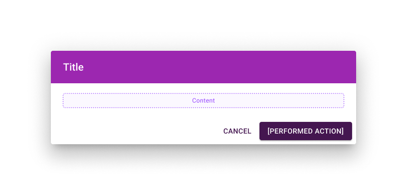

Directives UX/UI
Table des matières
Modèle de page général
Grille de données
Dialogue
💡 Utilisez le composant Dialog plutôt qu’un modal. Le modal est l’élément de bas niveau destiné à bloquer l’interaction. Le Dialog est basé sur un modal, mais est spécialisé dans la fourniture d’informations et d’actions supplémentaires.
Un Dialog est composé de trois parties principales :
-
Titre. Contient une déclaration ou question brève et claire. Il doit communiquer l’objectif du Dialog.
La couleur de fond est
secondary. -
Contenu. Tout ce qui est nécessaire au contexte, du texte d’accompagnement au formulaire complet.
Pour un contenu long, utilisez
scroll=paper. -
Actions. Il y a toujours un moyen de revenir en arrière (Annuler). Et l’action principale est à droite. Le libellé doit refléter l’action effectuée au clic.
Si un champ obligatoire se trouve dans le contenu, le bouton d’action est désactivé jusqu’à ce qu’ils soient complétés.
Annuler. Bouton texte, couleur primary.
Action. Bouton contained, couleur primary.

La réactivité est configurée comme suit :
> 🚧 À définir (full-width + maxWidth variable selon les breakpoints ?).
Icônes
Les Material Icons doivent être dans le style Outlined par défaut.
Champs obligatoires
Lorsque des informations sont requises pour continuer :
-
Le(s) champ(s) obligatoire(s) doivent afficher un astérisque
*après le libellé. -
Au-dessus du/des champ(s) obligatoire(s), expliquez la signification de l’astérisque. Ce message est affiché une seule fois, après le titre et avant le(s) champ(s) obligatoire(s).
Ajoutez
* Champs obligatoires., avec le style typographiquesubtitle2. - Le bouton d’action sous le(s) champ(s) n’est activé que lorsque tous les champs obligatoires sont remplis.

Thème
Couleurs principales
-
Vous pouvez trouver des couleurs primaires et secondaires assorties en utilisant un générateur de palette comme Coolors. Si vous avez déjà une couleur primaire en tête, vous pouvez également générer une couleur secondaire assortie avec un Color Wheel.
Générer les variantes de couleurs MUI pour theme.json
-
Utilisez le MUI Theme Creator. En bas à droite, vous pouvez modifier une couleur
mainpour générer automatiquement ses varianteslightetdark, ainsi que la couleurcontrastTextcorrespondante.Notez que ceux-ci sont différents d’un thème d’application clair/sombre. Ce sont des nuances plus claires et plus foncées de la couleur principale. Vous pouvez les utiliser pour jouer avec le contraste dans l’interface.
Vérifier le contraste
-
C’est une bonne pratique de vérifier le contraste. Les outils en ligne de palette et de couleurs ont tendance à s’appuyer sur des normes de contraste variées. Mieux vaut vérifier et choisir la norme de contraste que vous souhaitez viser.
-
MUI utilise les couleurs dans différents contextes. Pour éviter tout problème, testez les contrastes de vos couleurs en conséquence. Vérifiez primary et secondary comme texte sur fond blanc et fond noir.
Notez que vos couleurs n’ont pas nécessairement besoin d’avoir un bon contraste avec le blanc et le noir d’emblée. C’est pour s’assurer que les modes clair et sombre fonctionneront. Mais les couleurs peuvent aussi être ajustées davantage pour mieux fonctionner dans un mode spécifique.
- Il est bon d’avoir un certain contraste entre primary et secondary. Vous n’avez pas besoin d’un contraste de niveau standard. Mais un composant secondary sur un fond primary peut arriver (comme un badge avec le nombre de notifications). Si primary et secondary sont trop proches, l’interface deviendra moins lisible.
Générer les couleurs appbar-chip-inactive
-
Si votre couleur primaire est plus foncée que votre secondaire. Utilisez
secondary darkcommeappbar-chip-inactive mainet Générez les variantes de couleurs MUI à partir de celle-ci. -
Si votre couleur primaire est plus claire que votre secondaire. Utilisez
secondary lightcommeappbar-chip-inactive mainet Générez les variantes de couleurs MUI à partir de celle-ci.